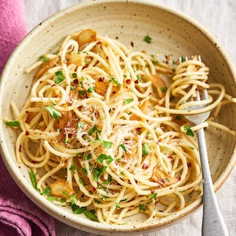

Spaghetti aglio e ollo

This is a traditional Neapolitan pasta dish which is both tasty and simple to prepare!
Ingredients
- 250gm raw bugatini (tubular spaghetti)
- Parmagiano reggano (parmesan cheese)
- Garlic infused olive oil (for simplicity)
- Salt and pepper for seasoning
- Chilli flakes (optional)
Instructions
- Fill spaghetti pot with 4L of water and put on high heat
- Add a tablespoon of salt to the water for improved flavour
- While the water boils, grate enough parmesan to suit your preferences
- When water has reached a rolling boil, add pasta and cook for 12~ minutes
- Before draining the pasta, make sure to preserve some of the leftover starch water
- Add drained pasta back to spaghetti pot, while seasoning with salt, pepper, oil, starch water and chilli flakes to taste
- Plate up and garnish with parmesan